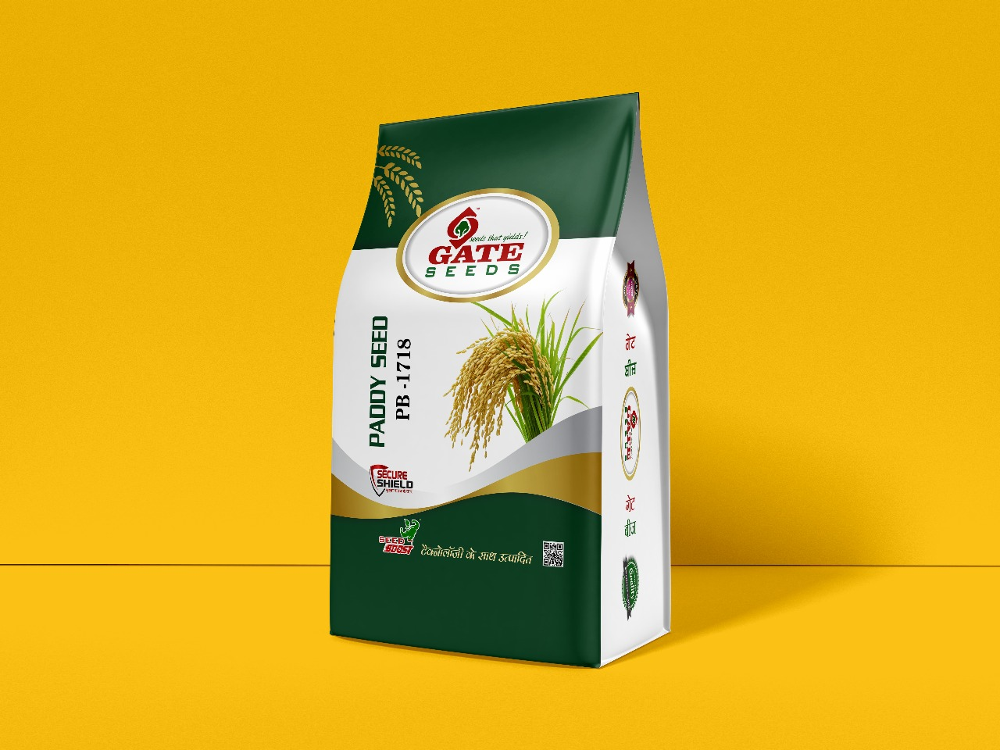
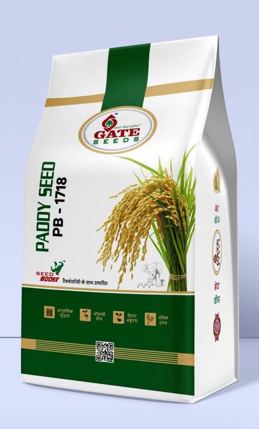
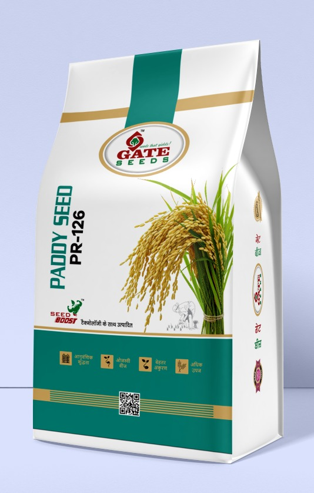
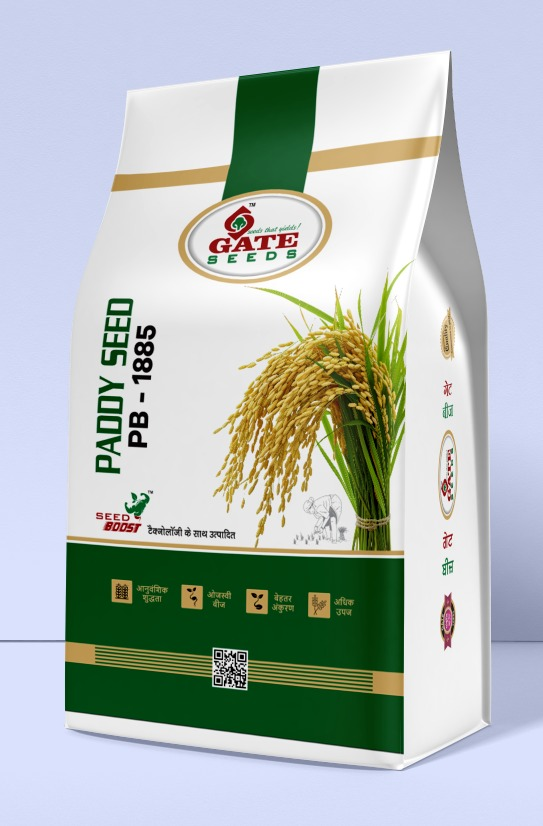
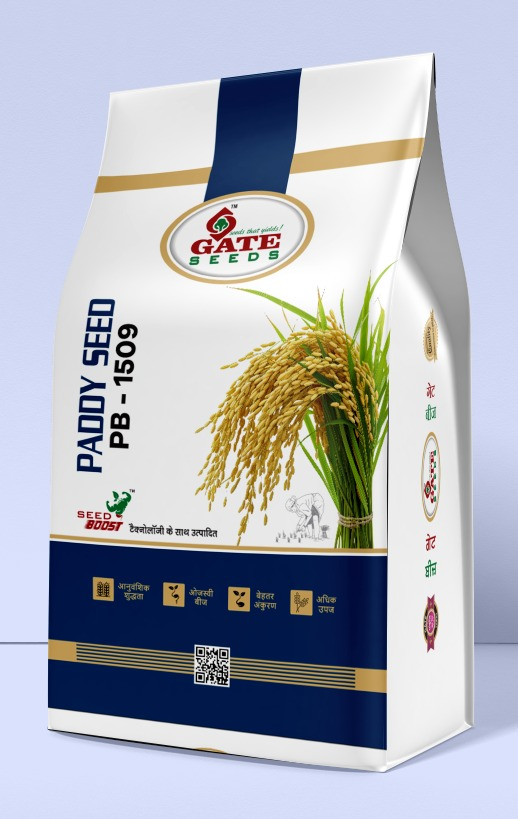
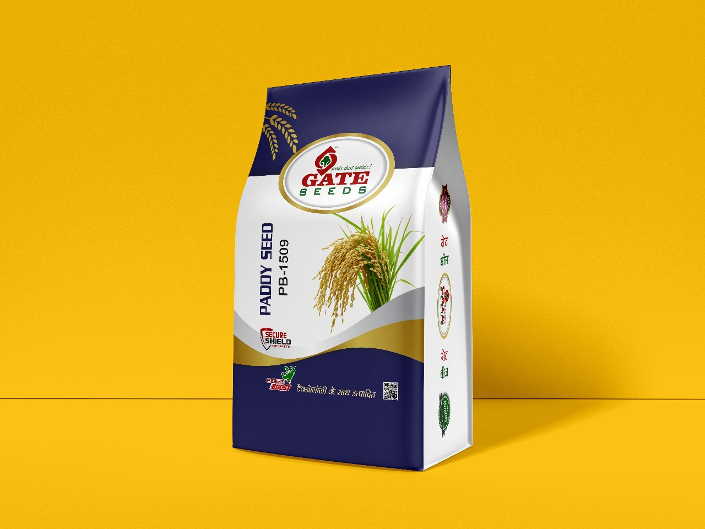

W
Crop
Wheat Seeds
Wheat Varieties
Research Variety SeedGATE-71
R&D
Enquire About Wheat Seeds
Home/Products
The GateSeeds PortfolioExplore proven, high-yielding wheat and paddy varieties alongside proprietary research developments: GATE-71 wheat and Kranti, our exclusive, internally developed paddy variety.

For current availability, pack information or any seed requirement, message GateSeeds on WhatsApp.
Selected GateSeeds paddy varieties shown in their current visual packaging.
Our exclusive, internally developed paddy variety, engineered for peak productivity and dependable field performance.






Look for the Seed Boost™ and Secure Shield™ trademarks across GateSeeds packaging. Each mark is used as a distinct quality signature within our product system.